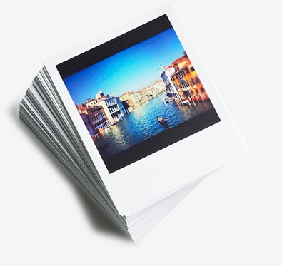

Introduction
Green ICT refers to using Information and Communication Technology efficiently and effectively with minimal or no harmful impact on the enviroment. The ICT resources that we use should be enviromentally friendly and sustainable. The aim of Green ICT is to reduce pollution, improve the enviroment,and conserver natural resources when using computer technology.
Why green ICT
Electronic Waste
E waste or electronic waste is created when an electronic product is discarded after the end of its useful life. The rapid expansion of technology means that a very large amount of e-waste is created every minute.
Energy Consumption
Electronic devices require energy to fuction. The development of ICT increases the number of devices and their opreating hours, and thus the overall energy comsumption.
Green of ICT
Role of Government
Government can organize campaigns and educatoin programs to raise public awareness and promote freener ICT uses. Funding or tax allowance can granted to companies which would opt ot oprate in a greener way by minimizing waste and carbon footprint.
Role of Industries
The industries can reduce overall energy comsumption by employing effcient data centers and cooling systems. For example,data centers can centralize and run systems of different companies,thereby reducing the total number of devices used.
Role of Citizens
Energy efficiency
Energy efficiency
To use energy Effciently means to do the same jobs with less energy.
Waste minimization
The 3Rs provide a guideline on how to minimize electronic waste.
| 3Rs | Examples |
| Reduce | Avoid buying unnecessary new devices or disposing of old devices which are still usable. |
| Reuse | Donate devices to charitable organizations for second-hand use. |
| Recycle | Recycle computers or electronic parts. |
Green by ICT
Role of Government
The HKSAR government has established an E-government website called GovHK.E-Governmnet refers to the interactions between citizens and government departments through the use of digital solutions.
The website provide an online system for booking appointments and making online enquiries.It also contains downloadable digital forms for different government services,such as smart identity card applications.With digital forms and services,a large amount of paper can be saved.
Role of Industries
Instead of face-to-face mettings,video conference can be held so that employees do not need to travel abroad to attend meetings. this helps reduce a company's carbon footprint(fuel consumed to trasport) by reducing business air travel. Also , the use of telecommunication saves a lot of a paper.
Role of Citizens
There are many actions that citizens can do to take contribute to Green by ICT.
| Instead of | Try |
Printed newspaper or paper books  |
Online newspaper or e-books |
Printed photos  | Digital photo frames |
Letters and mails 
| Instant messaging or video calls |
Paper books for classroom teaching | E-textbooks 
|